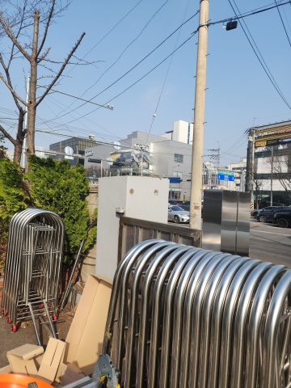
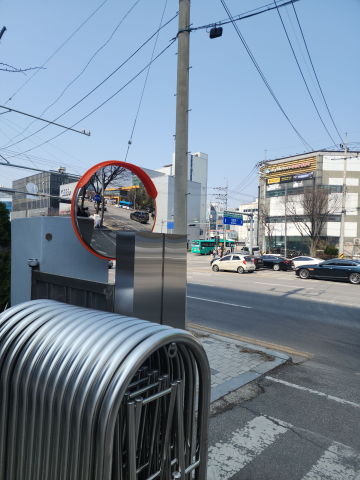
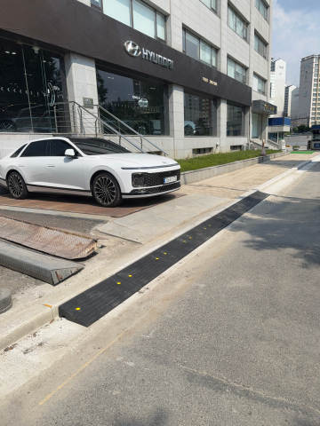

반사경 설치
운전자에게 잘 보이는 각도와 위치에 반사경을 설치합니다.


성남시 수정구 창곡동 반사경 상담
사각지대를 줄여 차량과 보행자의 안전 확보에 도움을 줍니다.

실내에는 PC 반사경을, 비바람과 햇빛을 받는 실외에는 스텐 반사경을 권장합니다.600·800·1000파이 등 필요한 크기를 선택하고, 잘 보이는 각도로 벽이나 지주에 설치합니다.PC 반사경은 실외에서 햇빛과 날씨의 영향으로 백화현상이 생길 수 있습니다.
반사경 시공 전·후 사진을 살펴보세요.
운전자에게 잘 보이는 각도와 위치에 반사경을 설치합니다.


어떤 작업을 하나요?
실내 주차장과 건물 안쪽처럼 환경 영향을 비교적 적게 받는 곳에 활용합니다.
비바람과 햇빛을 받는 실외 주차장 출입구나 도로변에 적합합니다.
사각지대의 거리와 차량이 들어오는 방향에 맞춰 크기와 각도를 정합니다.
PC 반사경은 실외에서 햇빛과 날씨의 영향으로 표면이 뿌옇게 변할 수 있어 실외에는 스텐 재질을 권장합니다.
설치·부분 교체 상담
현장 전체와 설치할 곳의 사진, 필요한 제품과 수량을 보내주세요. 설치부터 부분 교체까지 원하는 작업에 맞춰 상담해 드립니다.야간·주말 일정도 현장에 맞춰 상담합니다.
주차장 출입구와 모퉁이의 사각지대를 줄이기 위해 반사경의 재질, 크기, 설치 방향을 맞춥니다.
주차장 출입구나 건물 모퉁이의 사각지대를 줄여 차량과 보행자의 사고 예방에 도움이 됩니다.
PC 반사경은 실내에서 많이 쓰이며, 실외에서는 햇빛과 날씨로 백화현상이 생길 수 있습니다. 스텐 반사경 등 환경에 맞는 재질을 선택합니다.
600파이, 800파이, 1000파이 등 설치 공간과 필요한 시야에 맞는 크기를 선택합니다.
벽면 또는 지주에 고정할 수 있으며 출입 방향과 거울 각도를 맞춰 설치합니다.
같은 지역의 다른 작업
다른 시공항목도 함께 살펴보세요.성남시 수정구 창곡동 시공 안내로 이동합니다.
 볼라드같은 지역 시공 안내 보기 →
볼라드같은 지역 시공 안내 보기 → 논슬립패드같은 지역 시공 안내 보기 →반사경현재 보고 계신 시공 안내
논슬립패드같은 지역 시공 안내 보기 →반사경현재 보고 계신 시공 안내 아스콘부분보수같은 지역 시공 안내 보기 →
아스콘부분보수같은 지역 시공 안내 보기 → 주차금지봉같은 지역 시공 안내 보기 →
주차금지봉같은 지역 시공 안내 보기 →
차량진입판같은 지역 시공 안내 보기 → 카스토퍼같은 지역 시공 안내 보기 →
카스토퍼같은 지역 시공 안내 보기 → 코너보호대같은 지역 시공 안내 보기 →
코너보호대같은 지역 시공 안내 보기 → 차선규제봉같은 지역 시공 안내 보기 →
차선규제봉같은 지역 시공 안내 보기 → 표지판설치같은 지역 시공 안내 보기 →
표지판설치같은 지역 시공 안내 보기 →다른 지역의 설치·교체 작업도 편하게 문의해 주세요.